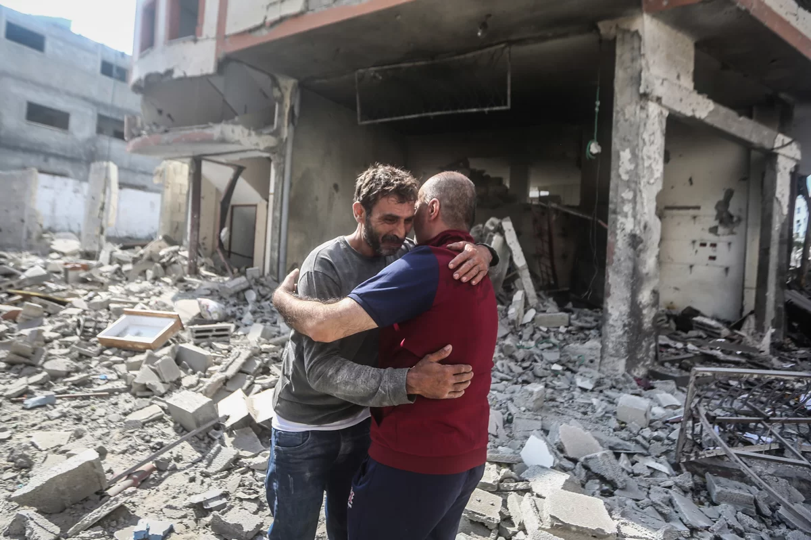
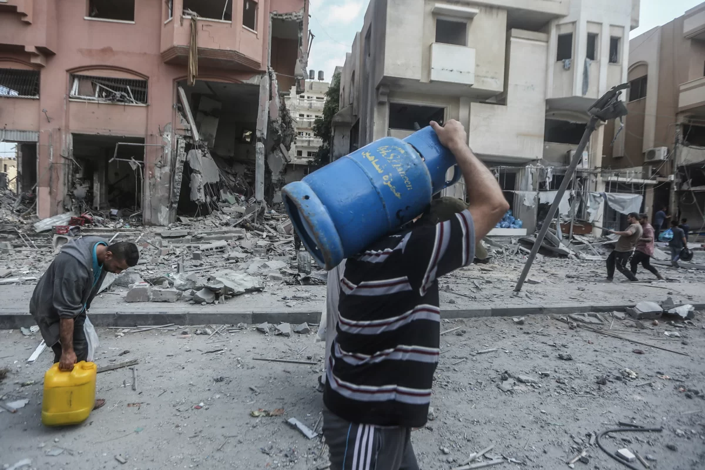

Brasil lidera esforço de paz na ONU e consegue aprovar cessar-fogo entre Israel e Hamas
O Brasil mostrou sua força diplomática e sua vocação pacifista ao conseguir aprovar uma resolução de cessar-fogo no Conselho de Segurança da ONU, que pode pôr fim ao sangrento conflito entre Israel e o Hamas na Faixa de Gaza. A resolução, que teve o apoio de 14 dos 15 membros do órgão, condena os ataques terroristas do Hamas contra Israel e exige a libertação imediata de todos os reféns civis. Além disso, a resolução apela ao respeito e à proteção dos profissionais de saúde e das instalações médicas em Gaza, especialmente após o bombardeio a um hospital na cidade de Gaza nesta terça-feira (17/10), que deixou pelo menos 500 mortos, segundo o Ministério da Saúde da Palestina.
Os bastidores da negociação
A resolução brasileira foi resultado de um intenso trabalho diplomático do governo Lula, que buscou construir um consenso entre os membros do Conselho de Segurança. O Brasil fez várias concessões para evitar o veto dos Estados Unidos, aliado de Israel, ou da Rússia, que apoia o Hamas. Entre as mudanças, o Brasil retirou do texto original a proposta de um corredor humanitário para Gaza e a menção ao direito internacional humanitário. O Brasil também incluiu no texto uma referência ao direito de Israel de se defender, conforme solicitado pelos americanos.
O embaixador do Brasil na ONU, Sérgio Danese, comemorou a aprovação da resolução e disse que ela representa uma vitória da diplomacia brasileira e da paz. "O Brasil demonstrou sua capacidade de liderança e mediação no cenário internacional, contribuindo para o fim do sofrimento dos civis em Gaza e para a segurança de Israel", afirmou. Danese também agradeceu aos demais países que apoiaram a iniciativa brasileira e pediu que as partes envolvidas no conflito cumpram o cessar-fogo.
As reações à resolução
A resolução brasileira foi elogiada por vários países e organizações internacionais, como a União Europeia, a Liga Árabe e a Organização da Cooperação Islâmica. O secretário-geral da ONU, Antonio Guterres, disse que a resolução é um passo importante para aliviar a crise humanitária em Gaza e para retomar as negociações para uma solução pacífica e duradoura do conflito. Guterres também parabenizou o Brasil pelo seu papel ativo e construtivo no Conselho de Segurança.
No entanto, nem todos os países ficaram satisfeitos com a resolução brasileira. Israel criticou o texto por não condenar o Hamas com mais firmeza e por não reconhecer o direito de Israel de se defender plenamente. O primeiro-ministro israelense, Benjamin Netanyahu, disse que Israel não aceita nenhuma interferência externa em sua segurança nacional e que continuará a combater o terrorismo do Hamas. Já o Hamas rejeitou a resolução por considerá-la parcial e favorável a Israel. O líder do grupo militante palestino, Ismail Haniyeh, disse que o Hamas não vai libertar os reféns civis nem cessar os ataques contra Israel até que Israel encerre o bloqueio a Gaza e reconheça os direitos do povo palestino.
Os desafios para a paz
A resolução brasileira entra em vigor imediatamente após a sua aprovação pelo Conselho de Segurança. No entanto, ainda há dúvidas sobre a sua implementação efetiva no terreno. O conflito entre Israel e o Hamas já deixou mais de 5 mil mortos, sendo a maioria palestinos, e mais de 10 mil feridos, segundo a ONU. As negociações para um cessar-fogo permanente ainda não avançaram, apesar da pressão internacional. O Brasil espera que a sua resolução possa contribuir para criar as condições necessárias para uma paz justa e duradoura na região.
A situação dos brasileiros em Gaza
A situação dos brasileiros que estão na Faixa de Gaza se tornou ainda mais crítica após o bombardeio a um hospital na cidade de Gaza nesta terça-feira (17/10), que deixou pelo menos 500 mortos, segundo o Ministério da Saúde da Palestina. O hospital Ahli Arab, que atendia centenas de pacientes e também servia de abrigo para civis, foi completamente destruído pela explosão. Entre as vítimas, há mulheres, crianças e idosos, além de médicos e enfermeiros.
O governo brasileiro está em contato com as autoridades locais e com a ONU para tentar garantir a segurança e a evacuação dos cerca de 50 brasileiros que ainda estão na região, segundo o Ministério das Relações Exteriores. A maioria dos brasileiros é formada por mulheres casadas com palestinos e seus filhos.
O Itamaraty informou que já conseguiu retirar 14 brasileiros da Faixa de Gaza desde o início dos conflitos entre Israel e o grupo militante Hamas, no dia 10 de outubro. Os brasileiros foram levados para o Egito pela passagem de Rafah, a única fronteira terrestre entre Gaza e o mundo exterior. No entanto, a passagem está frequentemente fechada pelas autoridades egípcias, que alegam questões de segurança.
A ONU estima que milhares de palestinos fugiram do norte de Gaza, onde os ataques israelenses são mais intensos, em busca de refúgio em escolas administradas pela agência da ONU para os refugiados palestinos (UNRWA). A agência alertou que os recursos humanitários estão se esgotando e que há risco de uma crise sanitária na região.

